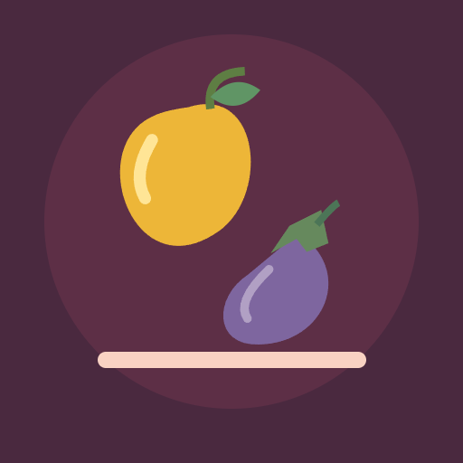

<- all projects

Bazaar Stack
PC
Volume
Live
A little place for everything.
Fresh deliveries have filled every corner of your market shop. Bring order to the shelves, fill each customer's basket and grow your little shop into the best stall in the bazaar. Click a shelf, then another, to move its rightmost item to an empty spot or onto a matching item. Gather three of a kind to deliver an order, use empty shelves to make room and plan each move. There are 100 puzzles across five shops, with 24 original illustrated goods from mangoes and okra to pickle jars and lentils, plus a daily basket and a calm mode with no move limit.